Life
Dr. Wendy Cotton — my person

The day she defended her Ph.D. — Hampton University
Dr. Wendy Knox Cotton — Hampton University
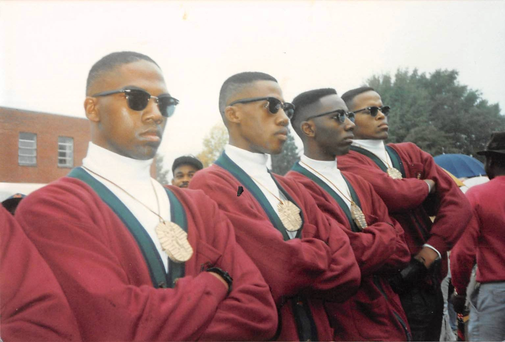
The line. Alpha Phi Alpha, Jackson State University.
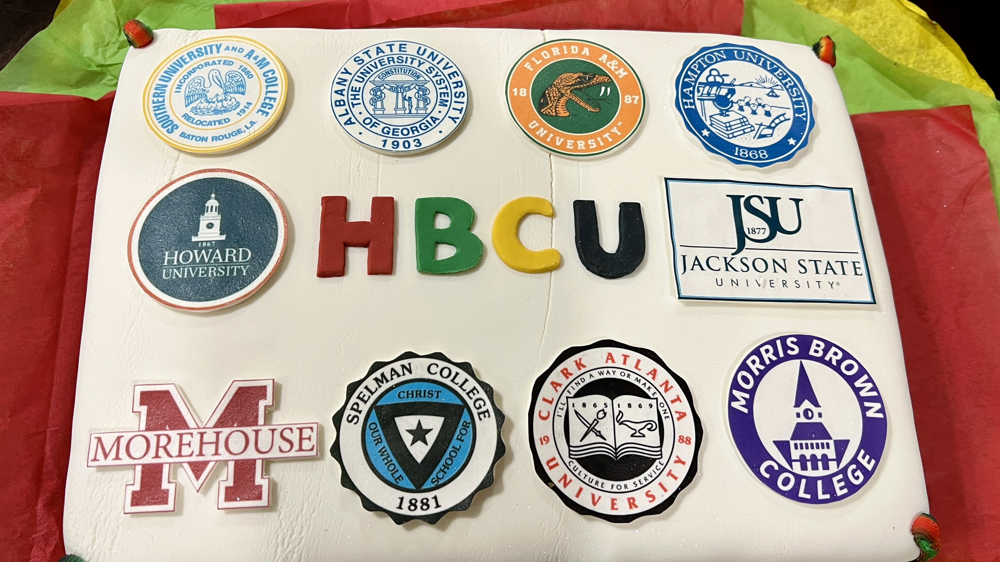
HBCU proud — always and forever
JSU made me. Go Tigers.
Atlanta bred me too

This is not a hobby. This is a calling.
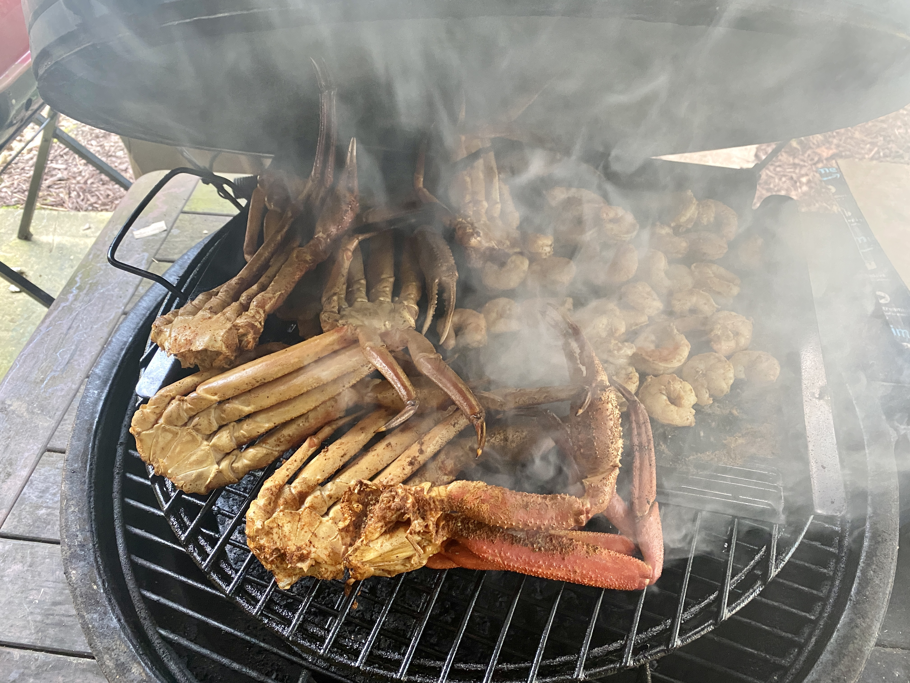
Land AND sea. Don't come hungry.
Best office view I've ever had
San Francisco — always exploring
Always chasing the next good horizon
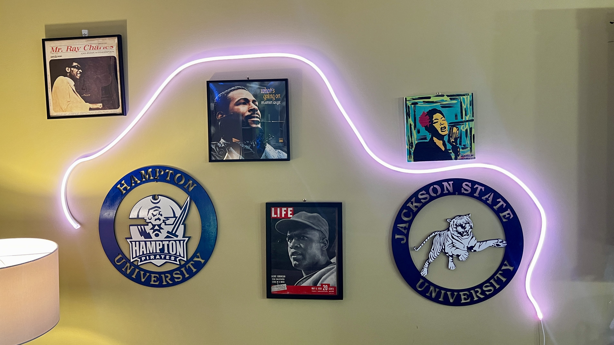
Ray Charles. Marvin Gaye. Billie Holiday. JSU. Hampton. Home.
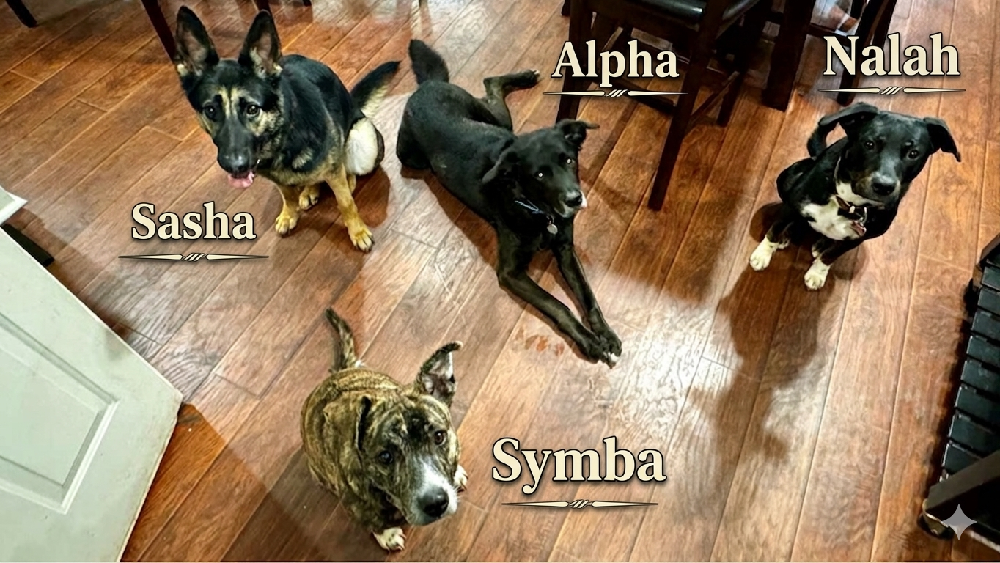
Sasha, Alpha, Symba & Nalah — my whole heart
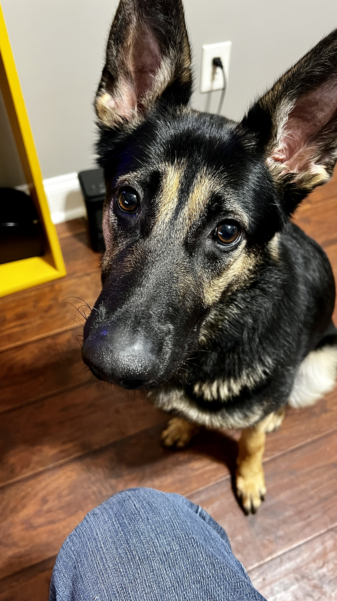
Sasha says hi
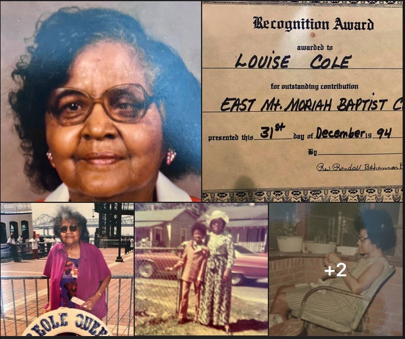
Louise Cole — East Mt. Moriah Baptist Church recognition, December 1994. She built something that lasted.
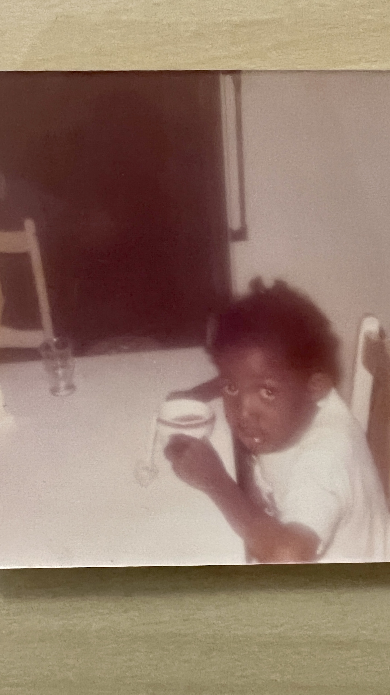
Chicago, IL — where it all started
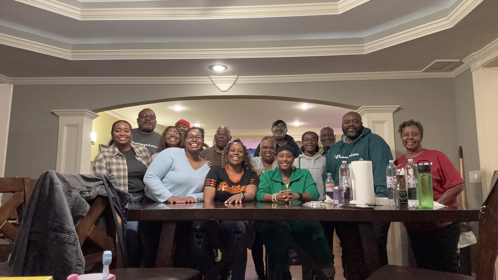
Family first — always

Home base, Georgia
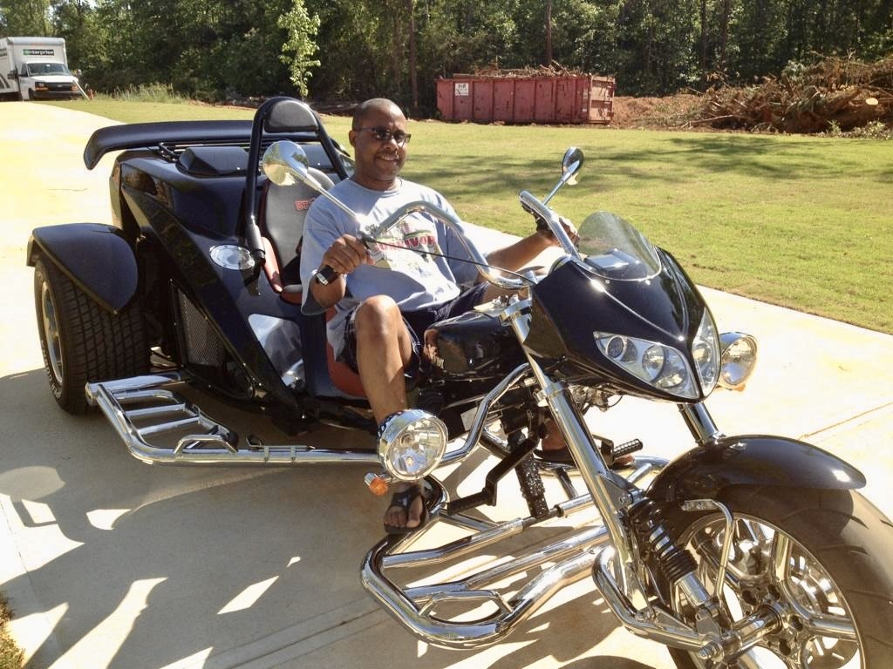
A little freedom never hurt anybody
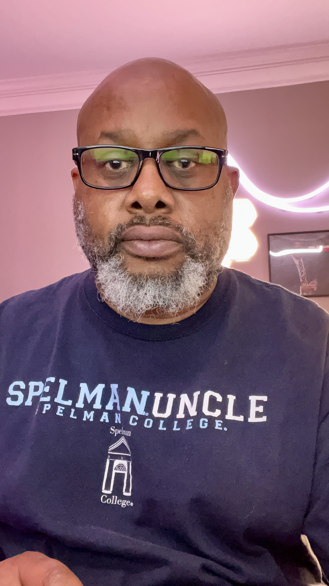
Proud Spelman Uncle
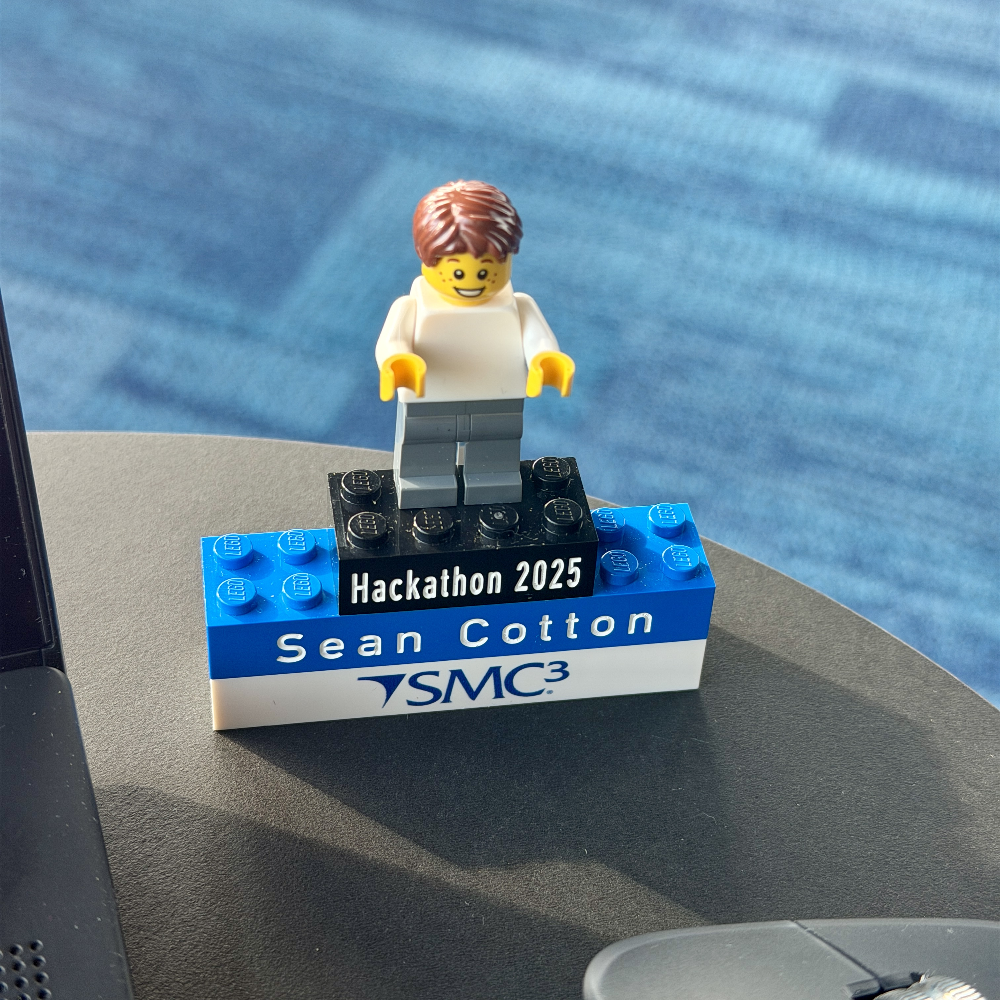
SMC3 Hackathon 2025 — yes, that's me in LEGO form
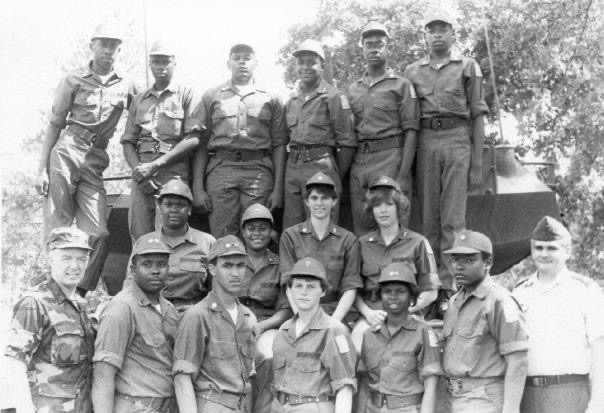
Meridian High School JROTC — where the discipline started
This Too Shall Pass — words I live by
Home. History. Pride.